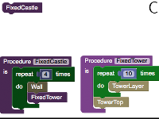

We've found a dragon that only speaks code! In Dragon Architect you learn it's language and help this peculiar creature construct wondrous things in a fun 3D building game. You'll use basic programming concepts to solve puzzles and build 3D structures out of cubes.
Dragon Architect is created by Aaron Bauer and Eric Butler as part of the Center for Game Science at the University of Washington. The Center for Game Science is part of the Computer Science & Engineering Department.
Research is an important part of the development of Dragon Architect. We are interested in exploring questions relating to computer science education, problem solving, and computational thinking.
We are always looking for exciting collaborations! If you are interested in using Dragon Architect as part of your program or in your research, please send email to awb <at> cs <dot> washington <dot> edu.
Below is a selection of published work based on Dragon Architect.
|  | Aaron Bauer, Eric Butler, Zoran Popović, Approaches for Teaching Computational Thinking Strategies in an Educational Game: A Position Paper, in Proceedings of the Blocks and Beyond workshop at the IEEE Symposium on Visual Languages and Human-Centric Computing (VL/HCC 2015). [pdf] |
We'd love to hear from you! Please send any comments, questions, and feedback to cgs-feedback@cs.washington.edu.